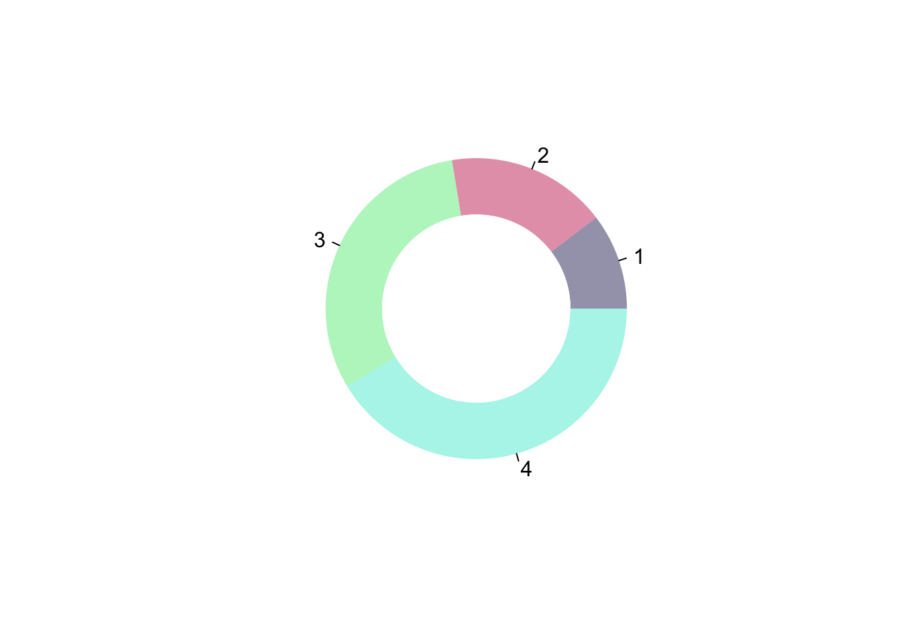
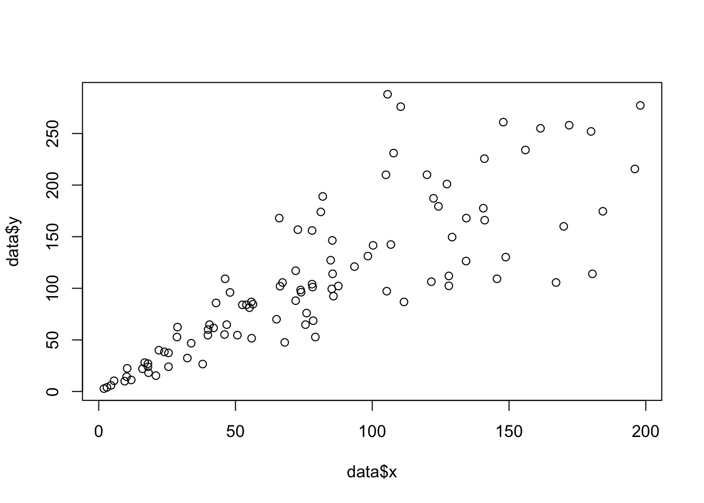

flowchart LR A[Define your colours] --> B[Generate a palette from your list of colours] B --> C[Create ggplot2 functions to use your palette]
HomeworkAssignment1
Custom colour palettes for ggplot2 notes
Color packages on R:
- ggplot2
- Can do it manually with scale_colour_manual()
- RColorBrewer
- viridis
Building a colour palette
Defining Colors and generating a palette
- Create a named list for your color palette
- Ex: Color_Purple <- c(rbg value1, rbg value 2, etc)
- Follow function attached below and include…
- the name of the colour palette we want to use,
- the list of colour palettes we want to extract our choice from,
- how many colours from it we want to use
- whether we want a discrete or continuous colour palette

- you will be given default RStudio colors. However…
- Use the colorRampPalette() from {grDevices} to interpolate the given colours onto a spectrum
- And THEN the switch() function to change the output of colors based on the chosen type of palette
- Ex:
cvi_palettes = function(name, n, all_palettes = cvi_colours, type = c("discrete", "continuous")) {palette = all_palettes[[name]] if (missing(n)) {n = length(palette)} type = match.arg(type) out = switch(type, continuous = grDevices::colorRampPalette(palette)(n), discrete = palette[1:n]) structure(out, name = name, class = "palette")}
Creating GGplot2 Function
- Start by defining simple ggplot 2 to demonstrate colors on later
library("ggplot2") df = data.frame(x = c("A", "B", "C"), y = 1:3) g = ggplot(data = df, mapping = aes(x = x, y = y)) + theme_minimal() + theme(legend.position = c(0.05, 0.95), legend.justification = c(0, 1), legend.title = element_blank(), axis.title = element_blank())
Two main ways to control the look of your plot
- scale_* function:
- Control the aesthetics that have been mapped to your data
- Using themes:
- Control the aspects of your plot which do not depend on your data e.g. the background color
Two aesthetics in {ggplot2} that involve color
- Colour, which changes the outline colour of a geom
- Fill, which changes the inner colour of a geom
g + geom_col(aes(fill = x), colour = "black", size = 2) + ggtitle("Fill") g + geom_col(aes(colour = x), fill = "white", size = 2) + ggtitle("Colour")
For each aesthetic, colour and fill, the function needs to be able to handle both discrete and continuous colour palettes. We need to make two functions:
- one to handle a discrete variable
- one for continuous variables
Color scale for discrete
scale_colour_cvi_d = function(name) { ggplot2::scale_colour_manual(values = cvi_palettes(name, type = "discrete")) }
Color fill for discrete
scale_fill_cvi_d = function(name) { ggplot2::scale_fill_manual(values = cvi_palettes(name, type = "discrete")) }
Color scale and fill for continuous
Just change the type to continuous
# The doughnut function permits to draw a donut plot
doughnut <-
function (x, labels = names(x), edges = 200, outer.radius = 0.8,
inner.radius=0.6, clockwise = FALSE,
init.angle = if (clockwise) 90 else 0, density = NULL,
angle = 45, col = NULL, border = FALSE, lty = NULL,
main = NULL, ...)
{
if (!is.numeric(x) || any(is.na(x) | x < 0))
stop("'x' values must be positive.")
if (is.null(labels))
labels <- as.character(seq_along(x))
else labels <- as.graphicsAnnot(labels)
x <- c(0, cumsum(x)/sum(x))
dx <- diff(x)
nx <- length(dx)
plot.new()
pin <- par("pin")
xlim <- ylim <- c(-1, 1)
if (pin[1L] > pin[2L])
xlim <- (pin[1L]/pin[2L]) * xlim
else ylim <- (pin[2L]/pin[1L]) * ylim
plot.window(xlim, ylim, "", asp = 1)
if (is.null(col))
col <- if (is.null(density))
palette()
else par("fg")
col <- rep(col, length.out = nx)
border <- rep(border, length.out = nx)
lty <- rep(lty, length.out = nx)
angle <- rep(angle, length.out = nx)
density <- rep(density, length.out = nx)
twopi <- if (clockwise)
-2 * pi
else 2 * pi
t2xy <- function(t, radius) {
t2p <- twopi * t + init.angle * pi/180
list(x = radius * cos(t2p),
y = radius * sin(t2p))
}
for (i in 1L:nx) {
n <- max(2, floor(edges * dx[i]))
P <- t2xy(seq.int(x[i], x[i + 1], length.out = n),
outer.radius)
polygon(c(P$x, 0), c(P$y, 0), density = density[i],
angle = angle[i], border = border[i],
col = col[i], lty = lty[i])
Pout <- t2xy(mean(x[i + 0:1]), outer.radius)
lab <- as.character(labels[i])
if (!is.na(lab) && nzchar(lab)) {
lines(c(1, 1.05) * Pout$x, c(1, 1.05) * Pout$y)
text(1.1 * Pout$x, 1.1 * Pout$y, labels[i],
xpd = TRUE, adj = ifelse(Pout$x < 0, 1, 0),
...)
}
## Add white disc
Pin <- t2xy(seq.int(0, 1, length.out = n*nx),
inner.radius)
polygon(Pin$x, Pin$y, density = density[i],
angle = angle[i], border = border[i],
col = "white", lty = lty[i])
}
title(main = main, ...)
invisible(NULL)
}
# Let's use the function, it works like PiePlot !
# inner.radius controls the width of the ring!
doughnut( c(3,5,9,12) , inner.radius=0.5, col=c(rgb(0.2,0.2,0.4,0.5), rgb(0.8,0.2,0.4,0.5), rgb(0.2,0.9,0.4,0.4) , rgb(0.0,0.9,0.8,0.4)) )Warning in rep(lty, length.out = nx): 'x' is NULL so the result will be NULLWarning in rep(density, length.out = nx): 'x' is NULL so the result will be NULL
You can add options to executable code like this
# Create data
data = data.frame(
x=seq(1:100) + 0.1*seq(1:100)*sample(c(1:10) , 100 , replace=T),
y=seq(1:100) + 0.2*seq(1:100)*sample(c(1:10) , 100 , replace=T)
)
# Basic scatterplot
plot(x=data$x, y=data$y)
The echo: false option disables the printing of code (only output is displayed).